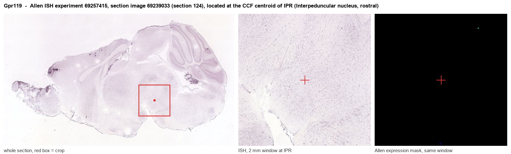
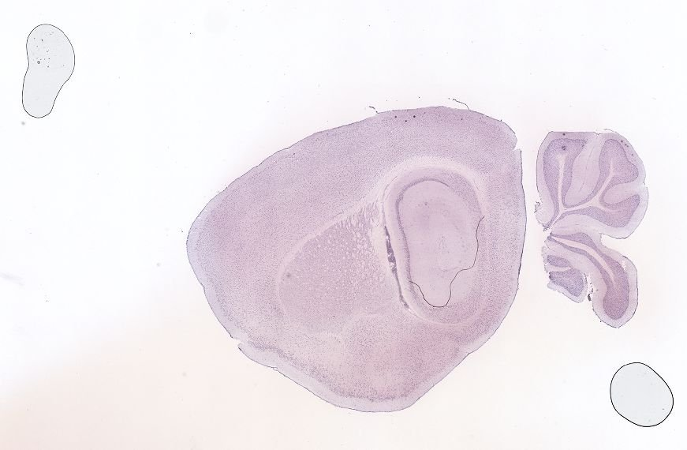
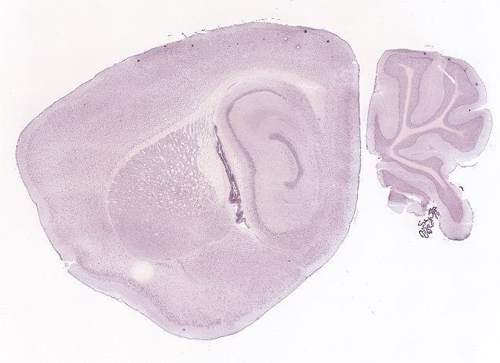
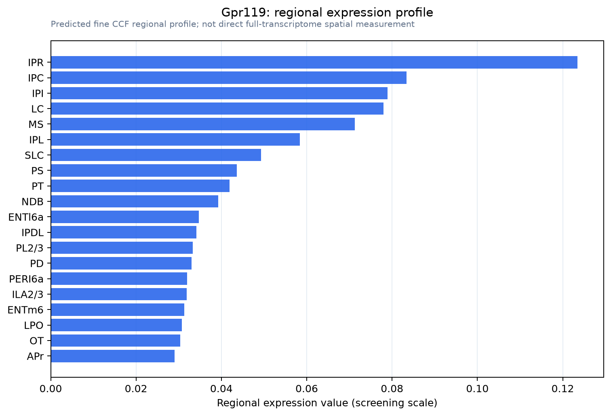

Gpr119
Glucose-dependent insulinotropic receptor (G protein-coupled receptor 119)
Spatial tier: STRICT_EXCLUSIVE · Class: GPCR · Top region: IPR (Interpeduncular nucleus, rostral) · Positive regions: 10/554
46.0Discovery Score
35.3Targetability Score
CEvidence grade C
What this means: Gpr119: predicted fine-region profile is strict-exclusive, with 10 positive regions out of 554 (limit 12); direct spatial validation is required.
Function in IPR: evidence, prediction, innovation
- Gene function
- Gpr119 encodes a class-A orphan-derived GPCR activated by lipid messengers, principally oleoylethanolamide (OEA) and 2-monoacylglycerols. It couples to Gs, so activation raises intracellular cAMP. In pancreatic beta cells and enteroendocrine L cells it enhances glucose-dependent insulin secretion and GLP-1 release, making it a type-2-diabetes drug target.
- Region function
- The rostral interpeduncular subnucleus is the primary target of medial habenula cholinergic projections and shapes nicotine aversion, withdrawal, anxiety and state-dependent modulation of raphe and tegmental circuits.
- Published in this region
- inferred No region-specific literature found. GPR119 has only been described as having minor, functionally uncharacterized CNS expression on top of its well-defined beta-cell and L-cell roles (Overton et al. 2006; Lauffer et al. 2009), so any IPR signal rests on transcriptomic/ISH atlas data rather than published neurobiology.
- Predicted function
- Prediction: As a Gs-coupled lipid sensor, GPR119 in IPR neurons would raise cAMP and increase excitability or presynaptic release when local OEA/2-oleoylglycerol rises, providing a metabolic-state input to habenulo-interpeduncular aversion circuitry. Systemic or intra-IPN GPR119 agonists (AR231453, MBX-2982) should therefore increase nicotine aversion and dampen intake, while Gpr119 deletion in IPN should weaken the satiety-linked component of aversion. A conditional knockout would test whether the anorectic action of OEA has a habenular-interpeduncular component distinct from its gut action.
- Innovation
- ★★★★★ 5/5 No published work addresses GPR119 as a neuronal receptor in the IPN despite excellent brain-penetrant agonists already existing from diabetes programmes.
- Tools
- Synthetic agonists AR231453, MBX-2982 and APD597, endogenous agonist oleoylethanolamide, antagonist AR436352, global and beta-cell-specific Gpr119 knockout mice; no Gpr119-Cre line or validated antibody known.
- References
Direct evidence located at the region

Allen ISH experiment 69257415, section image 69239033 (section 124): the section that contains the CCF centroid of Interpeduncular nucleus, rostral according to the Allen image-to-atlas alignment (reference_to_image), with a 2 mm window around that point. Left: whole section, red box = window. Middle: ISH signal. Right: Allen's expression-mask view of the same window. open this image in the Allen viewer
Look it up yourself: Allen Mouse Brain ISH for Gpr119Allen reference atlas: IPR (structure 607344834)ABC Atlas MERFISH viewer(in the ABC Atlas choose dataset MERFISH-C57BL6J-638850-CCF, colour cells by gene "Gpr119" or by parcellation_substructure "IPR")All genes confined to IPR + 3-D brain
Direct spatial evidence
MERFISH REGION LOCATOR

DIRECT ALLEN ISH

DIRECT ALLEN ISH

Regional expression figure

Predicted WMB × fine-CCF profile; not direct full-transcriptome spatial measurement.
Spatial profile
Evidence and specificity
- Evidence status
- PREDICTED_FINE
- Direct sources
- None; predicted localization only
- Exclusive threshold
- 12 positive regions out of 554
- Spatial specificity
- 0.348
- Top-region fraction
- 0.101
- Filter status
- PASS
Interpretation limits
- Cell-type-to-region projection is imputed expression, not direct spatial measurement.
- Adult reference atlases do not establish stability across age, sex, strain, state, or disease.
- Transcript abundance does not guarantee protein abundance or genetic-tool performance.